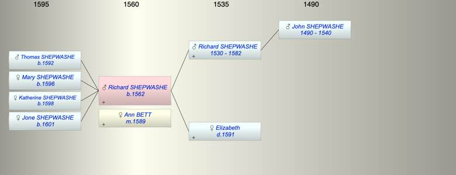

| [Index] |
| Richard SHEPWASHE (1562 - ) |
|  |
| b. 1562 at Chilham |
| m. 20 Jan 1589 Ann BETT at Chilham |
| Parents: |
| Richard SHEPWASHE (1530 - 1582) |
| Elizabeth ( - 1591) |
| Siblings (6): |
| Tamsen SHEPWASHE (1560 - 1626) |
| Anne SHEPWASHE (1568 - ) |
| John SHEPWASHE (1572 - ) |
| James SHEPWASHE (1575 - 1575) |
| Jane SHEPWASHE (1578 - ) |
| Thomas SHEPWASHE (1580 - 1581) |
| Children (4): |
| Thomas SHEPWASHE (1592 - ) |
| Mary SHEPWASHE (1596 - ) |
| Katherine SHEPWASHE (1598 - ) |
| Jone SHEPWASHE (1601 - ) |
| Events in Richard SHEPWASHE (1562 - )'s life | |||||
| Date | Age | Event | Place | Notes | Src |
| 1562 | Richard SHEPWASHE was born | Chilham | Note 1 | ||
| 1582 | 20 | Death of father Richard SHEPWASHE (aged 52) | Chilham | Note 2 | |
| 20 Jan 1589 | 27 | Married Ann BETT | Chilham | ex Ancestry | |
| 1591 | 29 | Death of mother Elizabeth | Chilham | Note 3 | |
| 1592 | 30 | Birth of son Thomas SHEPWASHE | Chilham | bap 23 Jul 1592 ex FMP | |
| 1596 | 34 | Birth of daughter Mary SHEPWASHE | Chilham | bap 23 Feb 1596 ex FMP | |
| 1598 | 36 | Birth of daughter Katherine SHEPWASHE | Chilham | bap 12 Mar 1598 ex FMP | |
| 1601 | 39 | Birth of daughter Jone SHEPWASHE | Chiham | bap 14 Apr 1601 ex FMP | |
| Note 1: bap Chilham 17 Sep 1562 no parents given ex PR |
| Note 2: buried 14 May 1583 ex FMP PR no further details. |
| Note 3: widow, buried 6 Feb 1591 ex FMP PR. She left a will |
| Created on a Mac™ using iFamily for Mac™ on 8 Oct 2023 |